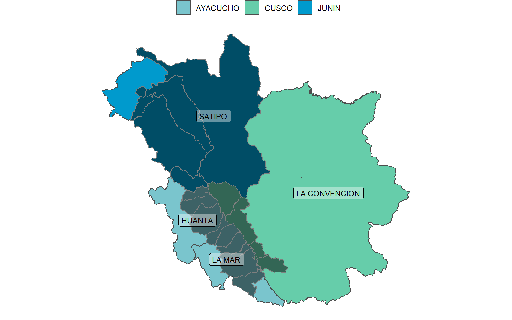
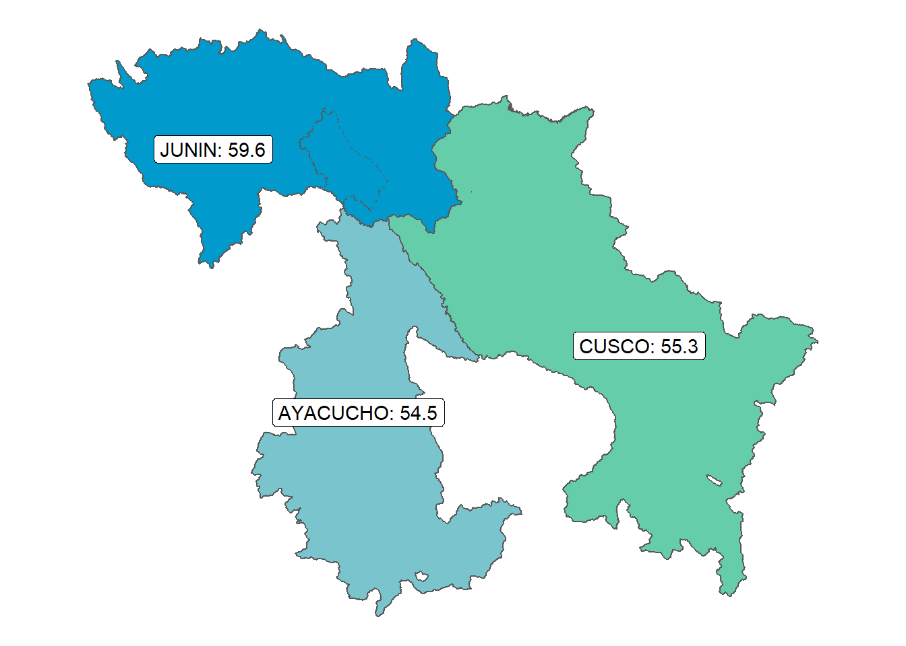
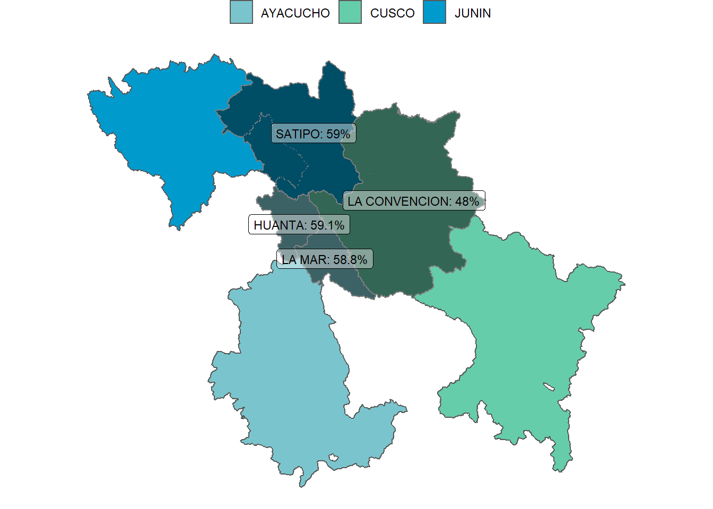

Reporte
Para fines de este reporte se considera VRAEM a los distritos identificados dentro de la Zona VRAEM según lo publicado por DEVIDA en el Reporte N° 7: SUPERFICIE CULTIVADA CON ARBUSTO DE HOJA DE COCA MONITOREADA EN 20211 en setiembre de 2022.
# A tibble: 24 × 4
departamento provincia distrito subzona
<chr> <chr> <chr> <chr>
1 JUNIN SATIPO COVIRIALI NORTE
2 JUNIN SATIPO LLAYLLA NORTE
3 JUNIN SATIPO MAZAMARI NORTE
4 JUNIN SATIPO PANGOA NORTE
5 JUNIN SATIPO RIO TAMBO NORTE
6 JUNIN SATIPO VIZCATAN DEL ENE NORTE
7 AYACUCHO LA MAR AYNA CENTRO
8 AYACUCHO HUANTA CANAYRE CENTRO
9 CUSCO LA CONVENCION KIMBIRI CENTRO
10 CUSCO LA CONVENCION CIELO PUNCO CENTRO
# … with 14 more rowsDe ellos, cinco corresponde a distritos de reciente creación, por lo que no ha sido posible obtener información de sus límites geográficos.
# A tibble: 5 × 4
departamento provincia distrito subzona
<chr> <chr> <chr> <chr>
1 CUSCO LA CONVENCION CIELO PUNCO CENTRO
2 CUSCO LA CONVENCION MANITEA CENTRO
3 CUSCO LA CONVENCION UNION ASHANINKA CENTRO
4 AYACUCHO LA MAR RIO MAGDALENA CENTRO
5 AYACUCHO LA MAR UNION PROGRESO SUR Para el resto de distritos, se puede observar el siguiente mapa:

La información se ha recopilado del portal de Consulta Amigable de la ejecución presupuestal del MEF con fecha 03 de Octubre de 2022
Ejecución presupuestal
A nivel de las regiones que tienen territorios en la zona VRAEM

A nivel de provincias se puede ver que de las provincias que tienen territorios dentro de la zona VRAEM, La Convención es la que menos ha ejecutado hasta la fecha.

Respecto a los distritos, se puede ver que: